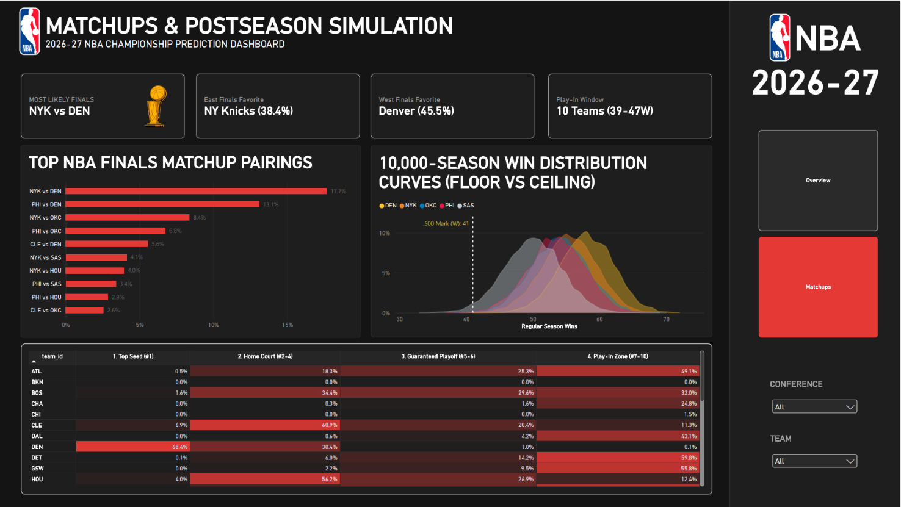

2026-27 NBA Championship Predictor
An End-to-End Predictive Machine Learning Pipeline & 10,000-Season Monte Carlo Simulation
Abstract
This project delivers an end-to-end sports analytics, machine learning, and simulation pipeline that forecasts the regular season standings, postseason seedings, and championship outcomes for the 2026-27 NBA season.
Rather than relying on raw box scores or subjective power rankings, this prediction engine is built on an exhaustive nine-layer feature engineering architecture that translates player-level telemetry, contextual fatigue, and team efficiency into causal win probabilities:
- Dean Oliver’s Four Factors: Quantifying the fundamental pillars of basketball efficiency for both offense and defense—Effective Field Goal Percentage (
eFG%), Turnover Rate (TOV%), Offensive Rebounding Percentage (OREB%), and Free Throw Rate (FTR). - Pace-Adjusted Advanced Ratings: Normalizing scoring efficiency across differing game speeds to compute true Offensive Rating (
ORTG), Defensive Rating (DRTG), and Net Rating (NET_RATING = ORTG - DRTG). - Causal Rolling Pre-Game Form: Calculating strictly backwards-looking 10-game rolling efficiency metrics and differential advantages (
DIFF_ROLL_NET_RATING,DIFF_ROLL_EFG, etc.) knowable prior to tip-off, fully eliminating circular look-ahead data leakage. - Contextual Schedule Fatigue & Rest: Modeling rest days, back-to-back flags (
B2B), and rest differentials (REST_DIFF = Home Rest - Away Rest) to capture physical fatigue. - Bayesian VORP Shrinkage: Applying empirical Bayes shrinkage (\(K = 8.0\), replacement level \(3.90\)) across multi-season player Value Over Replacement Player (VORP) metrics to stabilize small-sample variance while preserving generational superstar impact.
- Rookie Draft-Slot Prior Imputation: Solving the historical “rookie valuation dilemma” by calibrating historical draft-slot priors (Top-3 Picks:
6.60, Lottery 4–14:4.84, Non-Lottery 1st Round:2.80, 2nd Round / Undrafted:1.50) so high-impact rookies are neither ignored nor artificially zeroed out. - Rotation-Weighted Roster Aggregation: Filtering each 15-man roster down to the core top-9 rotation players by minutes and value (
TOTAL_ROSTER_VALUE), capturing the postseason reality that bench depth matters far less than playoff rotation strength. - Playoff Experience & Resilience: Quantifying roster-wide cumulative career playoff games played (
TOTAL_PLAYOFF_EXPERIENCE) to capture crunch-time poise and championship battle-testing. - Calibrated Modern Synergy Power Score: Unifying team strength through a balanced 40/50/10 formula: 40% historical franchise rolling efficiency, 50% Bayesian active rotation value, and 10% playoff pedigree.
These engineered features train a well-calibrated machine learning win classifier, which feeds into a 10,000-season Monte Carlo simulation engine simulating all 1,230 regular season games, the official NBA Play-In Tournament, and complete Best-of-7 playoff series to forecast the 2027 NBA Champion.
Executive Summary & Final Verdict
Across 10,000 fully simulated seasons and playoffs, the Denver Nuggets emerge as the projected 2026-27 NBA Champion with a 31.2% title probability, anchored by the league’s highest individual rotation valuation and Nikola Jokić’s sustained peak.
The New York Knicks lead the Eastern Conference with a 20.6% championship probability, setting up NYK vs. DEN (17.7%) as the single most frequent simulated NBA Finals pairing.
Top 10 Contender Projections
| Team | Conf | Projected Wins | Playoff Prob | Conf Finals Prob | Finals Prob | Championship Prob |
|---|---|---|---|---|---|---|
| Denver Nuggets (DEN) | West | 58.1 | 99.98% | 64.7% | 45.5% | 31.2% |
| New York Knicks (NYK) | East | 55.4 | 99.91% | 58.3% | 38.4% | 20.6% |
| Philadelphia 76ers (PHI) | East | 53.5 | 99.61% | 51.8% | 29.5% | 14.4% |
| Oklahoma City Thunder (OKC) | West | 53.9 | 99.67% | 45.1% | 22.3% | 12.2% |
| San Antonio Spurs (SAS) | West | 50.0 | 97.35% | 26.5% | 11.1% | 4.8% |
| Houston Rockets (HOU) | West | 49.3 | 96.89% | 25.0% | 9.9% | 4.4% |
| Cleveland Cavaliers (CLE) | East | 49.1 | 96.41% | 26.6% | 11.9% | 3.9% |
| Minnesota Timberwolves (MIN) | West | 46.8 | 90.07% | 14.1% | 4.6% | 1.7% |
| Boston Celtics (BOS) | East | 45.6 | 85.82% | 14.9% | 5.6% | 1.7% |
| Orlando Magic (ORL) | East | 45.7 | 86.29% | 14.5% | 4.7% | 1.3% |
Power BI Executive Analytics Suite
The simulation telemetry and data model were compiled into a publication-grade, dark-themed Microsoft Power BI dashboard inspired by official NBA.com analytics portals.
Page 2: Matchups, Win Distributions & Postseason Seeds

Acknowledgements & Data Sources
- NBA Official Stats API (
stats.nba.comvianba_api): 2,460 regular season game logs (2024–25 and 2025–26 seasons) and complete postseason player box scores. - Basketball-Reference: Historical playoff series outcomes, franchise win totals, and award voting data.
- NBA Transactions & Opening Week Rosters (October 2026): Active 15-man rosters, depth charts, age, experience, and trade movements.
Tools & Tech Stack
- Python (Pandas, NumPy, SciPy): Ingestion, feature pipelines, rolling window efficiency calculations, and Monte Carlo engines.
- Scikit-Learn & LightGBM: Pre-game win classification, chronological time-series splitting, calibration curves, and ROC-AUC validation.
- Power BI Desktop & DAX: Star-schema dimensional modeling (
dim_teams,fact_team_projections,fact_finals_matchups,fact_win_distribution,fact_seed_distribution), conditional formatting heatmaps, and executive KPI cards. - Quarto & GitHub Pages: Reproducible technical publication, dark mode styling, and public web hosting.
Predictive Modeling Results
To prevent look-ahead bias, game features were computed strictly from historical pre-game performance (rolling 10-game efficiency metrics, rest advantage, and Bayesian roster valuation). Models were evaluated on an out-of-sample chronological test set:
| Model | Accuracy | ROC-AUC | Engineering Notes |
|---|---|---|---|
| Logistic Regression (Baseline) | 66.99% | 0.7324 | Best calibrated model. Avoided overfitting, aligned with true NBA home/away margins, and produced optimal probabilities for simulation. |
| Random Forest Classifier | 66.42% | 0.7251 | Strong non-linear interaction capture; slightly less calibrated on high-probability favorites. |
| XGBoost Classifier | 62.60% | 0.6731 | Tendency to overfit on noise in small rolling game windows without aggressive regularization. |
Pipeline Architecture & Chapters
Explore the full methodology and code across the five project chapters:
- 01. Data Extraction & Integrity: Raw box score ingestion, feature extraction, missing value auditing, and data sanity checks.
- 02. Feature Engineering & Valuation: Dean Oliver Four Factors, pace adjustments, Bayesian player shrinkage (\(K=8.0\), replacement level \(3.90\)), and rookie draft-slot priors.
- 03. Machine Learning Win Models: Rolling window causal features, chronological train/test splitting, ROC-AUC benchmarking, and feature importance analysis.
- 04. Monte Carlo Playoff Simulation: 10,000 full-season simulations, tiebreakers, Play-In tournament brackets, and Best-of-7 series mechanics.
- 05. Conclusions & Reflections: Engineering post-mortems, look-ahead leakage traps, superstar weighting discoveries, and domain retrospectives.